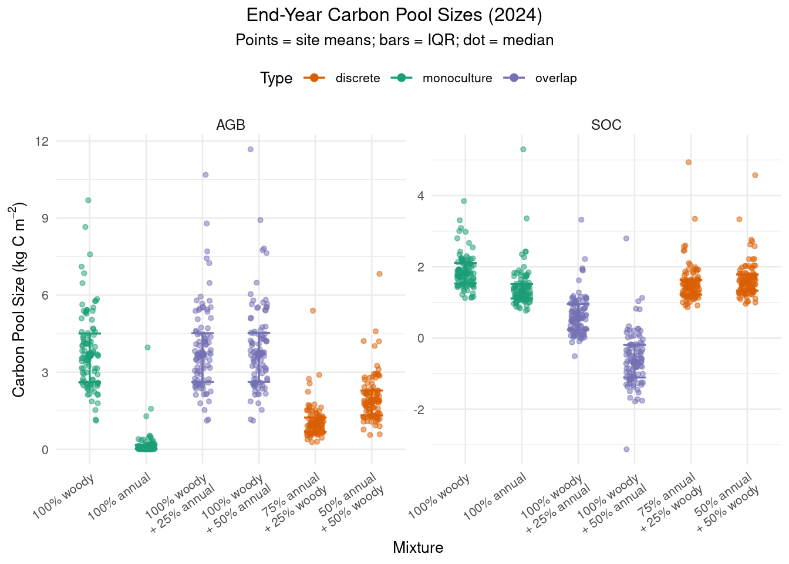
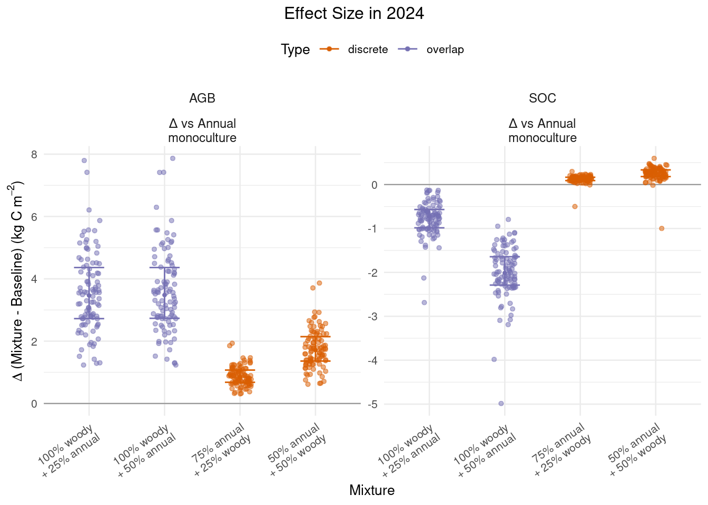
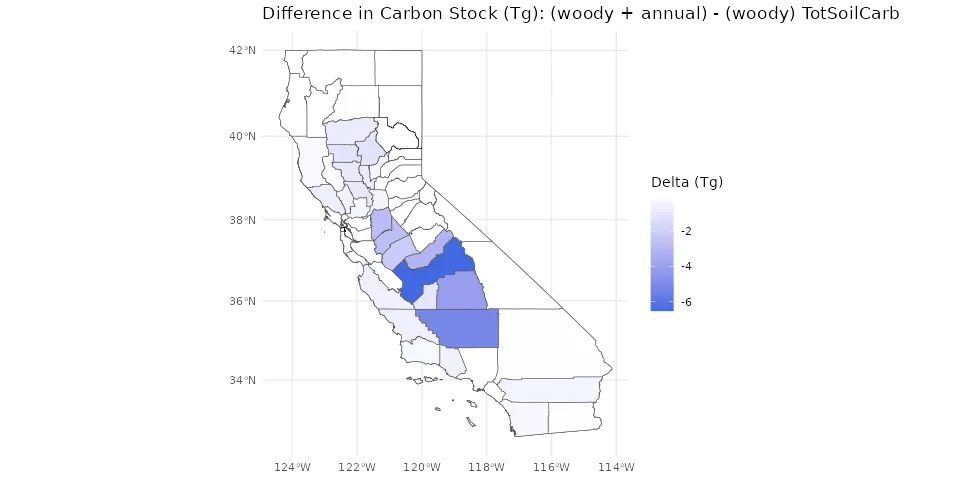
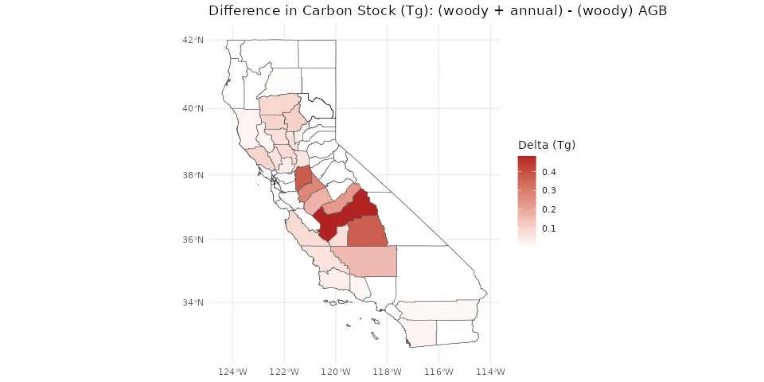
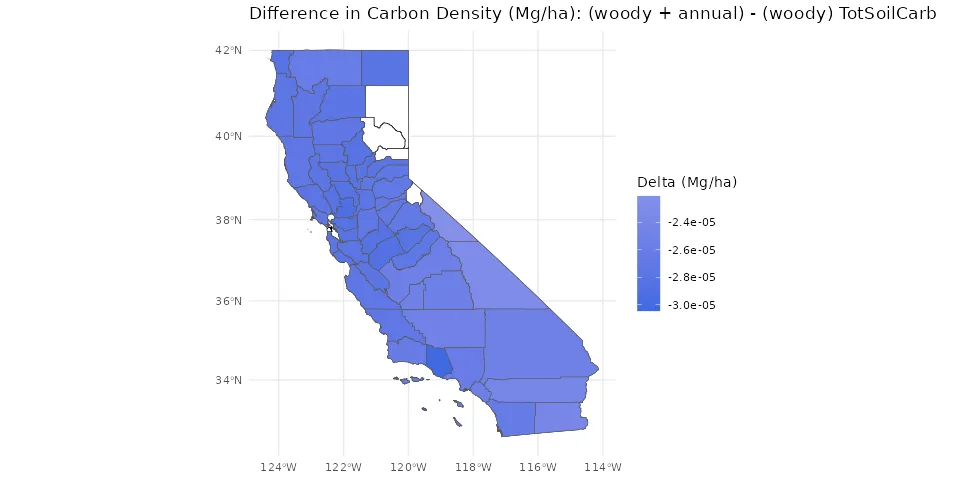
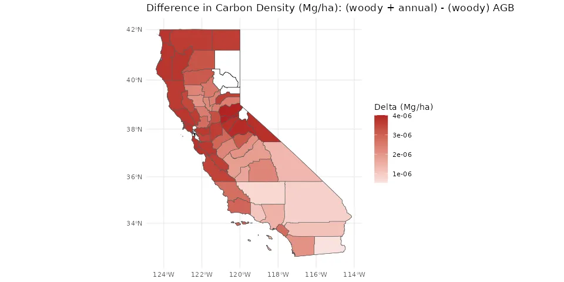

Mixed-System Prototype (Two-PFT Aggregation)
This document prototypes a workflow for modeling croplands with multiple crops (“mixed cropping systems”).
Challenge
CARB identifies multiple practices from the Healthy Soils Program (https://www.cdfa.ca.gov/oars/healthysoils/) that rely on mixed cropping systems—such as hedgerows, orchard ground cover, windbreaks, riparian buffers, intercropping, and cover-crop mixtures (CARB, 2022 and Appendix Table 3).
It is important to be able to represent scenarios that contain multiple crops at the same time. The challenge is that SIPNET simulates only one Plant Functional Type (PFT) - a standard approach used in many land surface, biogeochemistry, and crop models.
Approach
Context
Here we consider methods of simulating cropping systems where two ecophysiologically distinct PFTs are present at the same time. These include woody buffers and orchards with ground cover. Here, ecophysiologically distinct means that the two PFTs have different growth forms (woody vs herbaceous) and/or phenology (perennial vs annual).
We do not consider mixtures of plant species that are similar enough to represent as a single PFT, including cover crop mixtures and agroforestry. We note that the approach described below could be applied to these practices, and this will be considered if the additional complexity can be justified by potential reduction in uncertainty.
We also do not consider practices in which different crops are planted in sequence. These include crop rotations, cover crops, and land use change. These scenarios can be represented as sequential model runs that change PFTs while maintaining a continuously evolving system state.
Algorithm
The general approach for combining multiple PFTs into an aggregate estimate of carbon pool size (and later, GHG fluxes) is to:
- Run SIPNET separately for each PFT.
- Combine the model outputs from the individual PFT.
Technical details of these steps are described in more detail below.
Initial Conditions Generation (IC)
- Run once for each PFT at each site.
- Meteorology and soil initial conditions:
- Use the same meteorological driver data (ERA5 ensemble).
- Use the same soil texture and soil organic carbon.
- Settings File:
- For each mixed site, create separate a separate configuration file for each PFT; append
-PFTto the site ID.
- For each mixed site, create separate a separate configuration file for each PFT; append
- For herbaceous crops:
- Annual herbaceous: assume start with bare ground (zero biomass).
- Perennial herbaceous: start as bare ground run; consider methods for estimating initial biomass in later iterations.
- For woody crops:
- Generate initial conditions.
Model Execution
- Execute PEcAn SIPNET model independently for each PFT and site combination.
- Use ensemble methods to propagate uncertainty and variance in model parameters, meteorological drivers and initial conditions.
- Following PEcAn convention, netCDFs will be in
out/ENS-{ensemble_number}-{site_id}-{pft}.
Post-processing Outputs
- Combine outputs: For each mixed site, combine model outputs using one of the approaches defined below.
- Standardize Results: Outputs are formatted into ensemble files (
combined_ensemble_output.csv) for downstream analysis and visualization.
Downscaling and Analysis
- Downscaling:
- Apply machine learning models trained separately for each PFT to downscale outputs.
- Combine downscaled outputs using one of the methods described below.
- Analysis:
- Calibrate using site level mixtures.
- Validate against downscaled outputs.
Mixture Methods
Two Cases for Mixed Cropping Systems: Discrete and Overlap
In a mixed cropping system, we define \(f_{woody}\) and \(f_{annual}\) as the percent contribution of a crop or plant functional type to ecosystem dynamics. This contribution is not “canopy cover” since that changes over time. Think of this as “percent of a monoculture”. This method will build on SIPNET’s single PFT design - the outputs from two separate single PFT runs simulate will be combined.
| Example System | Scenario | Method | Eqn. |
|---|---|---|---|
| Annual Crops + Woody Hedgerow | Discrete | Weighted Average | 1 |
| Orchard + Ground Cover | Overlap | Incremental | 2 |
Notation
We define the following values:
- \(X\) is the carbon stock (AGB or SOC).
- For a finite time interval \(\Delta t\) starting at \(t_0\) (the start of the simulation) the change is \(\Delta X_{\Delta t} = X(t_0 + \Delta t) - X(t_0)\).
- \(f_{woody}\) and \(f_{annual}\) are the fractional contributions of each PFT to ecosystem dynamics. In the case of the discrete method, these represent cover and sum to 1. In the overlap case, \(f_{woody} = 1\) and \(f_{annual} < 1\).
Scenario 1: Discrete (Weighted)
For the Discrete case, we use a Weighted Average approach (Equation 1).
The Discrete case refers to mixed systems where the two different crops do not overlap. This covers two key scenarios: 1) each PFT occupies a distinct zones such as an annual crop with woody hedgerows or 2) a mixture of annuals. In this annual mixture case, the approach assumes that the plants do not overlap - even though this is not the case, it is a reasonable simplification. In the discrete case, the field scale ecosystem dynamics are approximated by weighting SIPNET outputs by the fractional area of each crop type within a field: \[ X_{\textrm{site}} = f_{\textrm{woody}}\cdot X_{\textrm{woody}} + f_{\textrm{annual}}\cdot X_{\textrm{annual}} \tag{1}\]
Scenario 2: Overlap
For the Overlap case, we use an Incremental approach (Equation 2).
This scenario applies when a ground cover is added to an existing orchard orchard. We set \(f_\textrm{woody} = 1\), reflecting the assumption that the addition of ground cover does not reduce the contribution of the woody species to ecosystem dynamics. Lowering this fraction below 1 at the moment of planting would represent an unrealistic scenario in which adding ground cover also reduced standing orchard biomass and associated impact of the woody species on ecosystem function. When woody biomass removal occurs, it is represented as a distinct harvest event.
The contribution of the ground cover is added incrementally to the system. The parameter \(f_\text{annual}\) represents the “ecosystem impact factor” - the fraction of a monoculture’s influence on ecosystem functioning that the ground cover contributes to this mixed system.
This factor is always less than 1 (\(f_\textrm{annual} < 1\)), as it accounts for both the percent of area covered by the ground cover and the reduction in its ecosystem impact due to competition for light and other resources.
Thus, when ground cover is added, it is treated as an addition to the ecosystem, and the orchard (woody monoculture) is assumed to remain unchanged.
\[ X_\textrm{site} = X_\textrm{woody} + f_\textrm{annual}\cdot\Delta X_\textrm{annual} \tag{2}\]
Demonstration
Here we illustrate this approach using the orchard + ground cover and annual crop + hedgerows scenarios.
We consider a set of mixtures used in the examples and figures below (Table 2); the percent columns indicate the fractional contribution of each Plant Functional Type (PFT).
| Scenario | Woody (%) | Annual (%) | Method |
|---|---|---|---|
| 100% woody perennial | 100 | 0 | monoculture |
| 100% annual herbaceous | 0 | 100 | monoculture |
| Orchard + 25% herbaceous ground cover | 100 | 25 | overlap |
| Orchard + 50% herbaceous ground cover | 100 | 50 | overlap |
| Annual crop + 25% woody hedgerows | 25 | 75 | discrete |
| Annual crop + 50% woody hedgerows | 50 | 50 | discrete |
Illustrative Examples
Run Configuration
These runs use SIPNET grass and temperate deciduous PFT parameterizations to represent annual and perennial woody crops, respectively.
These simulations were run from 2016 through 2024 across 10 sites, with an ensemble size of 20.
Mixed-system dataset
The combined_ensemble_output.csv file contains the combined outputs for different scenarios (discrete, overlap).
County Comparisons on Woody Sites (Downscaled)
This section compares three treatment scenarios on the same set of woody sites using the downscaled outputs:
- 100% woody (baseline)
- 100% woody + 50% annual (overlap)
- 100% annual (counterfactual on woody sites)
Selecting Representative Sites
Next we select representative sites based on their productivity. We use AGB in the 100% woody scenario as an indicator of productivity. We select sites that are near the 15th, 50th, and 85th percentiles of AGB and categorize them as low, medium, and high productivity.
Summary Statistics
| Mixture | Type | AGB | SOC |
|---|---|---|---|
| 100% woody | monoculture | 4.7 (2.7) | 1.8 (0.6) |
| 100% annual | monoculture | 0.3 (0.5) | 1.3 (0.7) |
| 100% woody + 25% annual | overlap | 4.8 (2.8) | 1.8 (0.6) |
| 100% woody + 50% annual | overlap | 4.9 (2.8) | 1.8 (0.6) |
| 75% annual + 25% woody | discrete | 1.4 (0.9) | 1.4 (0.6) |
| 50% annual + 50% woody | discrete | 2.5 (1.4) | 1.6 (0.5) |
Carbon Pool Sizes For Different Mixture Types
What we expect to see here:
- Discrete mixtures: Carbon pools scale approximately as the fractional (area) weighted average of the two monocultures.
- Overlap mixtures: Pools are dominated by the woody monoculture plus a modest incremental contribution from the annual component.

Effect Size (Final Year AGB and SOC Compared to Annual Monoculture)
These plots show the change in carbon pool sizes for each mixture compared to the annual monoculture baselines. Because we are considering the healthy soils practice of adding a woody component like a hedgerow to an annual cropping system, we use annual monoculture as the point of comparison.

Effect on County Level Carbon Stocks
Here we present county-level maps showing the impact of adding 50% ground cover to orchards on carbon stocks and densities. Positive values indicate an increase relative to woody-only.
These maps are generated from the downscaled outputs that are presented in the Downscaling Results page.
Change in Carbon Stocks (Tg):


Change in Carbon Density (Mg/ha):


Other Approaches Considered
We evaluated several alternative approaches for representing mixed cropping systems:
- Fractional coverage approach (mosaic / tiling) Each PFT is simulated separately and then combined by fractional area weighting (Li & Arora, 2011). This is the “Discrete” method described above (Equation 1).
- Composite PFT approach A new parameter set is defined to represent the mixture as a single “composite” PFT (e.g., DayCent: Parton et al., 1998).
- Vegetation demography approach Individual or cohort based models explicitly represent competition for light and resources among PFTs, as well as disturbance and successional dynamics (Fisher et al., 2018).
Limitations:
- Composite PFTs: By lumping mixture components into a single parameterization prevents explicit evaluation of the incremental contribution of individual PFTs - it would be harder to compare an orchard monoculture to an orchard+ground cover system. It can also bias estimates of pools and fluxes relative to the weighted mixture model (Li & Arora, 2011).
- Fractional weighting: While more realistic, this approach requires careful treatment of long-lived pools (e.g., soil organic carbon, woody biomass). If the PFTs share a common soil, raw stocks cannot be summed without double-counting; instead, \(\Delta\) stocks relative to a common baseline (or shared-pool formulations) should be aggregated - as is done in the “Overlap” method above (Equation 2).
- Demography models provide mechanistic representation of competition but impose higher computational costs and require additional data and parameterizations (Fisher et al., 2018; Fisher & Koven, 2020).
References
CARB (2022). Draft 2022 Scoping Plan for Achieving Carbon Neutrality. https://ww2.arb.ca.gov/sites/default/files/2022-09/2022-draft-sp-appendix-b-draft-ea-recirc.pdf
Fisher and Koven, 2020. Perspectives on the future of land surface models and the challenges of representing complex terrestrial systems. JAMES 12, e2018MS001453. https://doi.org/10.1029/2018MS001453
Fisher et al., 2018. Vegetation demographics in Earth system models: a review of progress and priorities. Global Change Biol. 24, 35–54. https://doi.org/10.1111/gcb.13910
Li, R., Arora, V.K., 2011. Effect of mosaic representation of vegetation in land surface schemes on simulated energy and carbon balances. https://doi.org/10.5194/bgd-8-5849-2011
Appendix
Healthy Soils Practices and Model Representation
| Agronomic Practice | Model Representation | Expected GHG Impact on State GHG Inventory | Expected Adoption (CARB 2022 Scoping Plan) | Priority |
|---|---|---|---|---|
| Cover Crops | Planting/harvest like commodity; PFT/mixture params. | High | High | High |
| Non-Crop Carbon Amendments (manure/compost) | Add surface C & organic N (low C:N litter analog). | High | High | High |
| N Fertilization | Increase soil inorganic N pools. | High | High | High |
| Transition to Certified Organic | Composite of shifts (fertility, amendments, tillage). | High | High | High |
| No-till / Reduced till | Lower decomposition pulses (freq & magnitude). | High | Medium | High |
| Polycultures / Mixtures | Independent PFT runs; combine by fractional contribution. | Medium | Medium | Medium |
| (Water management placeholder) | Increase soil water content. | High | ||
| Annual → Perennial | Change PFT; partial biomass retained. | High | Low | Low |
| Agroforestry / Woody Buffers | Independent woody runs; spatial aggregation. | High | Low | Low |